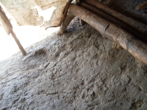
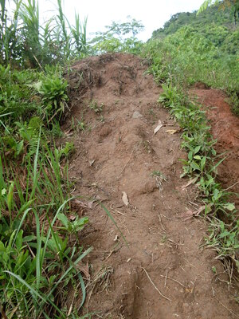

salad  
/salad/
adj_rt.
“weed-free”
adj.
(masalad, mA1-) (of the ground when you can see a) very clear path
Egbaleran ku ka dalan te ambew ne amana ne masalad.
I'll put a mouse trap on its path which is very clear.
Cult. Especially used of an area where lots of people walk, thus the weeds are unable to grow.
Eng. clear trail; trail, clear; path, clear; distinct trail; conspicuous trail; bare ground; ground, bare; clear of weeds; weed free
OCM: Grounds (351)
Online dict status: -
Usage level: M
Updated by: RJH,TME,RJH
Last updated: 04/Aug/2017
This page last updated: 03-Jan-2020
Copyright © 2009-2014, Matigsalug Language Christian Association, Inc